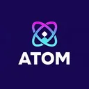
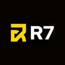
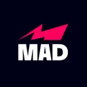
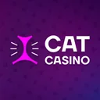
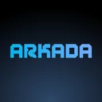
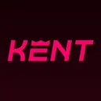
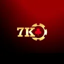

Онлайн-казино: приложение для Android и iOS
Мобильные версии и приложения площадок. Для каждой указано, какие платформы поддерживаются и чем приложение отличается от браузерной версии.
Обновлено: 13 августа 2026
Приложение казино или мобильная версия: что выбрать
У площадок есть два способа работать на телефоне, и они решают разные задачи.
Мобильная версия сайта открывается в браузере, ничего не требует устанавливать и обновляется автоматически. Подходит, если вы играете время от времени и не хотите занимать память.
Приложение устанавливается на устройство, работает быстрее за счёт локального кеша интерфейса и поддерживает push-уведомления о бонусах и статусе выплат. Имеет смысл при регулярной игре.
Функционально касса, бонусы и каталог в обоих вариантах одинаковы: приложение — это оболочка над тем же сервисом, а не отдельная площадка со своими условиями.
Почему приложений почти нет в App Store и Google Play
Официальные магазины ограничивают размещение азартных приложений. Google Play допускает их только в отдельных странах и требует подтверждённую лицензию для каждого региона. App Store придерживается схожей политики и дополнительно требует, чтобы разработчиком выступал сам лицензированный оператор, а не партнёр.
Из-за этого площадки чаще распространяют Android-приложение как APK-файл со своего сайта. Это законно, но накладывает на пользователя ответственность за источник загрузки.
Установка APK на Android: как не поймать подделку
APK — обычный установочный файл, но именно через него распространяются поддельные «приложения казино», которые крадут учётные данные.
Правила безопасной установки:
- Скачивайте только с официального домена площадки, проверенного по реестру лицензии. Не по ссылке из мессенджера или рекламы.
- Не отключайте Play Protect насовсем — разрешите установку разово для конкретного файла.
- Проверьте разрешения после установки. Игровому приложению не нужен доступ к SMS, контактам и списку звонков. Запрос таких прав — признак вредоносного ПО.
- Обновляйте вручную с того же сайта: APK вне магазина не обновляется сам.
iOS: как это работает на iPhone
Для iPhone установка сторонних файлов недоступна вне официального магазина, поэтому вариантов два: приложение в App Store, если оператор его туда провёл для вашего региона, либо веб-версия.
Практичное решение для iOS — добавить сайт на домашний экран через «Поделиться» → «На экран Домой». Ярлык открывается в полноэкранном режиме без адресной строки и внешне почти не отличается от приложения, при этом не требует установки и не несёт рисков стороннего файла.
Что проверить перед установкой
- Размер и требования — устаревшая версия ОС может не поддерживаться.
- Полнота функционала — в некоторых приложениях недоступны разделы live-казино или часть платёжных методов.
- Единый аккаунт — учётная запись общая с сайтом, регистрироваться заново не нужно.
- Работа кассы — вывод и верификация должны быть доступны прямо в приложении, иначе придётся всё равно заходить через браузер.
Расход трафика и автономная работа
Онлайн-казино требует постоянного соединения: результат каждого спина рассчитывается на сервере, а не на устройстве. Играть офлайн на реальные деньги невозможно ни в приложении, ни в браузере — офлайн-режим бывает только у демо-игр без денежного баланса.
Основной расход трафика приходится на графику и анимации, поэтому при мобильном интернете разумно один раз загрузить приложение по Wi-Fi.
Безопасность мобильного аккаунта
Телефон хранит активную сессию, привязанную карту и историю платежей. Минимальный набор мер: блокировка экрана, уникальный пароль от аккаунта и двухфакторная аутентификация, если площадка её поддерживает. При потере устройства первым делом смените пароль — это завершит активные сессии на всех устройствах.
Топ-10 площадок: приложения
- 1

Atom CasinoЛидер рейтинга
Бонус300% или 900 FS - 2

R7 Casino
БонусДо 200 FS - 3

MAD Casino
Бонус455% или 455 FS - 4

Cat Casino
Бонус300 FS - 5

Arkada Casino
Бонус500 FS - 6
Dragon Money
Бонус не указан - 7
Чемпион Казино
Бонус100 FS + 350 000 ₽ и 500 FS - 8

Kent Casino
БонусДо 500 FS - 9
Motor Casino
Бонус300% + 850 FS - 10

7K Casino
Бонус300 000 ₽ + 300 FS
Частые вопросы
Чем приложение казино отличается от сайта в браузере?
Функционально ничем: касса, бонусы, каталог и аккаунт общие — приложение это оболочка над тем же сервисом. Разница техническая: приложение быстрее запускается за счёт локального кеша интерфейса и присылает push-уведомления о статусе выплат. Мобильная версия сайта не требует установки и обновляется автоматически.
Почему приложения казино нет в Google Play?
Магазины ограничивают азартный контент. Google Play допускает такие приложения только в отдельных странах и требует подтверждённую лицензию для каждого региона отдельно. Поэтому операторы чаще распространяют Android-приложение APK-файлом со своего сайта — это законно, но ответственность за источник загрузки ложится на пользователя.
Как установить APK и не поймать подделку?
Скачивайте только с официального домена, проверенного по странице верификации лицензии, а не по ссылке из мессенджера или рекламы. После установки проверьте разрешения: игровому приложению не нужен доступ к SMS, контактам и списку звонков — запрос таких прав означает вредоносное ПО. Обновлять APK придётся вручную, автоматически он не обновляется.
Что делать владельцам iPhone?
Установка файлов вне App Store на iOS невозможна. Варианта два: приложение оператора в магазине, если оно опубликовано для вашего региона, либо веб-версия. Практичное решение — добавить сайт на домашний экран через «Поделиться» → «На экран Домой»: ярлык открывается в полноэкранном режиме без адресной строки и внешне почти не отличается от приложения.
Нужно ли регистрироваться заново в приложении?
Нет, аккаунт общий с сайтом. Баланс, бонусы, история транзакций и статус верификации синхронизированы. Достаточно войти под существующими логином и паролем.
Можно ли играть в приложении без интернета?
На реальные деньги — нет. Результат каждого раунда рассчитывается на сервере провайдера, поэтому соединение обязательно на протяжении всей сессии. Приложения с пометкой «без интернета» — это демо-версии с виртуальными фишками, выигрыш в них не выводится.
Все ли функции доступны в приложении?
Не всегда. У части операторов в приложении недоступны разделы live-казино или отдельные платёжные методы, а верификация вынесена на сайт. Проверьте это до установки: если касса работает только в браузере, приложение теряет основное удобство.